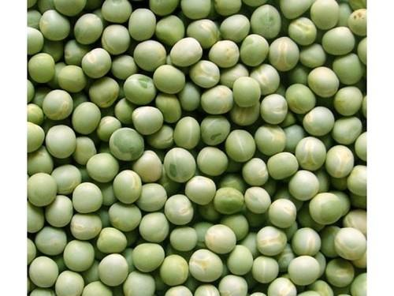

वाटाणा विषयी माहिती

प्रस्तावना
वाटाणा हे थंड हवामानातील पीक असून या पिकाची महाराष्ट्रात मोठ्या प्रमाणात लागवड केली जाते. वाटाण्याचा उपयोग
आहारात भाजी म्हणून केला जातो.
वाटाण्याच्या ओल्या दाण्यांपासून भाजी आणि इतर अनेक खाद्यपदार्थ तयार करता येतात.
वाटण्याचे दाणे हवाबंद करून. गोठवून किंवा सुकवून बराच काळ साठविता येतात. हिरवे ओले वाटाणे वाळवून त्यापासून डाळ
बनविता येते. वाळविलेल्या अख्या वाटाण्यांचा उपयोग भाजीसाठी करता येतो.
वाटाण्यामध्ये कार्बो प्रोटीन्स तसेच
फॉस्फरस, पोटॅशियम, मेग्निशियम हि खनिजे आणि अ, ब, व क जीवनसत्वे भरपूर प्रमाणात असतात.
हवामान व जमीन
वाटाणा हे थंड हवामानात वाढणारे पीक आहे. सरासरी तापमान १० ते १८ सेल्सिअस असल्यास पिकाची वाढ चांगली होते. वाटाणा
पीक सर्व प्रकारच्या जमिनीत घेता येत असले तरी हलक्या जमिनीत पीक लवकर तयार होते.
तर मध्यम भारी पण भुसभुशीत जमिनीत
पीक तयार होण्यास जास्त कालावधी लागतो.
मात्र या जमिनीत उत्पादन चांगले मिळते. वाटाण्याच्या पिकासाठी पाण्याचा निचरा
होणारी, भुसभुशीत, कसदार, रेतीमिश्रित आणि ५.५ ते ६.७ सामू असलेली जमीन निवडावी.
पूर्वमशागत
वाटाणा हे चांगले उत्पादनशील असल्यामुळे त्याची पूर्वमशागत योग्य रीतीने करून जमीन चांगली भुसभुशीत करावी. त्यामुळे
मुळ्या चांगल्या वाढतात आणि भरपूर अन्नद्रव्ये शोषून घेऊन झाडाची वाढ व्यवस्थित करण्यास हातभार लावतात.
त्यासाठी उभी
आडवी नांगरट करून २-३ कुळवाच्या पाळ्या द्याव्यात. ढेकळे व्यवस्थित फोडावीत व जमीन सपाट करावी. पेरणीपूर्वी पाणी
देणे आवश्यक समजावे व वापसा आल्यावर पेरणी केल्यास उगवण चांगली होते.
लागवडीचा हंगाम
महाराष्ट्रात हे पीक खरीप हंगामात जुन - जुलै मध्ये तसेच हे पीक थंड हवामानात येणारे असल्यामुळे याची लागवड ऑक्टोबर
महिन्याच्या सुरुवातीस किंवा नोव्हेंबर महिन्याच्या सुरुवातीस करणे हितावह ठरते.
बियाणे
लागवडीसाठी पाभरीने पेरल्यास हेक्टरी ५० ते ७५ किलो लागते. पण जर टोकण पद्धतीने लागवड केली तर हेक्टरी २०-२५ किलो
बियाणे पुरेसे होते. पेरणीपूर्वी बियाण्यास प्रतिकिलो ३ ग्रॅम थायरमची बीज प्रक्रिया करावी.
त्यामुळे मूळ कुजव्या
टाळता येईल. त्याच प्रमाणे अनुजीवी खताचीही प्रक्रिया बियाण्यास आवश्यक आहे. रायझोबिअम कल्चर चोलल्यामुळे उत्पादनात
हमखास वाढ झालेली दिसून आलेली आहे.
प्रकार व जाती
लागवडीसाठी वाटाण्याचे दोन प्रकार आहेत.
बागायती किंवा भाजीचा वाटाणा (गार्डन पी) जिरायती किंवा कडधान्याचा वाटाणा (फिल्ड पी) बागायती वाटाण्याचे दोन गट
पडतात.
गोल गुळगुळीत बिया असलेले - या जातीचा वाटणा सुकविण्यासाठी करतात. सुरकुतलेल्या बियांचे प्रकार - या जातीच्या
वाटाण्यात साखरेचे प्रमाण जास्त असल्यामुळे वाटणे गोड लागतात आणि पिठूळपणा कमी असतो.
या गटातील जाती हिरवे दाणे
डबाबंद करून विकाण्य्साठी, गोथावाण्यासाठी किंवा हिरव्या शेंगासाठी वापरतात. वाटणे गोड लागतात आणि पिठूळपणा कमी
असतो.
या गटातील जाती हिरवे दाणे डबाबंद करून विकाण्य्साठी, गोथावाण्यासाठी किंवा हिरव्या शेंगासाठी वापरतात.
सुधारित वाण
लवकर येणाऱ्या जाती - अर्ली बॅगर, अर्केल, असौजी, मिटीओर
मध्यम कालावधीत येणाऱ्या जाती - बोनव्हिला, परफेक्शन न्यु लाईन
उशिराया येणाऱ्या जाती - एन. पी. - २९, थॉमस लॅक्सटन
लागवड व खते
लागवड एक तर सपाट वाफ्यात करतात. किंवा सरी व वरंब्यावर करता येते. त्यासाठी ६० सेमी अंतरावर सरी वरंबे करून
सऱ्यांच्या दोन्ही अंगास बिया टोकून लागवड करावी. दोन रोपांतील अंतर ५ ते ७.५ सेमी ठेवण्याची शिफारस केली आहे.
एका
ठिकाणी किमान दोन बिया टोकाव्यात. काही भागात पाभरीने बी पेरून मग वाफे बांधले जातात.
वाटाणा पिकास जमिनीचा मगदूर पाहूनच खताची शिफारस केली जाते. त्यासाठी हेक्टरी १५ ते 20 टन शेणखत, २० ते ३० किलो
नत्र, तर ५० ते ६० किलो स्फुरद आणि ५० ते ६० किलो पालाश देणे जरुरीचे आहे.
जमिनीची मशागत करीत असताना संपूर्ण शेणखत
जमिनीत पसुरून ते चांगले मिसळणे जरुरीच असते. त्याचप्रमाणे संपूर्ण पालाश आणि स्फुरद व अर्धे नत्र, बी पेरण्याचे
अगोदर जमिनीत पेरावे किंवा मिसळावे. त्यातून राहिलेले नत्र ज्यावेळी पीक फुलावर येईल त्यावेळी द्यावे.
पाणीपुरवठा
खतांबरोबर पाण्याचेही व्यवस्थापन हि व्यवस्थित राखणे फार महत्वाचे आहे. बी पेरल्याबरोबर लगेच पाणी द्यावे.
कीड व रोग
कीड
वाटाणा पिकावर मावा, शेंगा पोखरणारी आली या किडींचा तर भुरी, मर रोग या रोगांचा प्रादुर्भाव आढळून येतो.
मावा: हि कीड हिरव्या रंगाची अत्यंत लागण असते. ते पानातून रस शोषून घेतात. त्यामुळे झाडे निस्तेज बनतात.
शेंगा पोखरणारी अळी: हिरव्या रंगाची हि अळी प्रथम शेंगाची साल खाते व आत शिरते आणि दाणे पोखरून खाते.
उपाय - यासाठी मॅलॅथिऑन ५० ईसी, ५०० मिली किंवा फॉस्फॉमिडॉन ८५ डब्ल्यू ईसी, १०० मिली किंवा डायमेथोएन ३० ईसी, ५००
मिली किंवा मिथिलडेमेटॉन २५ ईसी, ४०० मिली, ५०० लिटर पाण्यात मिसळून प्रती हेक्टरी फवारावे. पेरणीनंतर ३ आठवड्यांनी
पहिली फवारणी करावी.
रोग
भुरी रोग - या रोगामुळे पिकाचे अतोनात नुकसान होते. या रोगात प्रथम पानांच्या दोन्ही बाजूंवर पांढरी पावडरीसारखी
बुरशी दिसून येते. नंतर ती रोपाच्या सर्व हिरव्या भागावर जलद पसरते व झाडाची उत्पादनक्षमता त्यामुळे खालावते.
उपाय : यासाठी मार्फोलीन २५० मिली किंवा पानाय्त मिसळणारे गंधक 80 टक्के १२५० ग्रॅम किंवा डिनोकॅप ४० डब्ल्यू पी ५००
ग्रॅम प्रती हेक्टरी ५०० लिटर पाण्यात मिसळून फवारावे.
किंवा गंधकाची भुकटी ३०० मेश प्रतिहेक्टरी २० किलो या
प्रमाणात धुरळावी. नंतर १५ दिवसांच्या अंतराने फवारणी / धुरळणी करावी. रोगास प्रतिबंधक अशा जातींचा वापर करावा.
मर रोग - या रोगाचा प्रसार जमिनीतील बुरशीमुळे होतो. रोगग्रस्त झाड पिवळे पडून वाळते
उपाय म्हणून पेरणीपूर्वी बियास थायरम हे बुरशीनाशक औषध प्रति किलोस ३ ग्रॅम या प्रमाणात चोळावे.
काढणी व उत्पादन
लवकर येणाऱ्या जातीचे हिरव्या शेंगाचे हेक्टरी उत्पादन २५-३७ क्विंटल तर मध्यम कालावधीत तयार होणाऱ्या जातीचे
उत्पादन ६५-७५ क्विंटल आणि उशिरा येणाऱ्या जातीचे ८५ ते ११५ क्विंटल येते. शेंगातील दाण्याचे प्रमाण ४० ते ४५ टक्के
असते.
भरघोस उत्पादनानंतर साठवणूक हा सुद्धा महत्वाचा मुद्दा लक्षात घेतला पाहिजे. नेहमीच्या तापमानात शेंगा जास्त दिवस
साठवून ठेवता येत नाहीत पण ० डिग्री से.ग्रे. तपमान व ८५ ते ९० टक्के आद्रता असल्यास हिरव्या शेंगा दोन
आठवड्यांपर्यंत साठवून ठेवता येतात